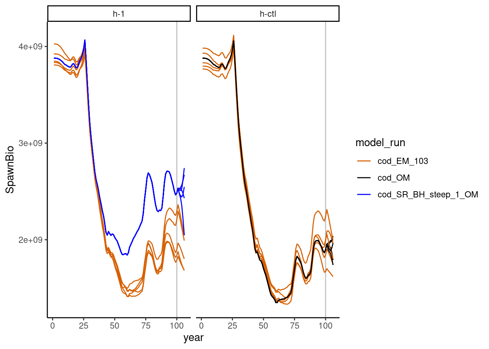

2 A simple example
Suppose we want to look at how well we are able to achieve a performance metric under uncertainty in the operating model (OM). We will look 2 scenarios, one where Steepness (h) is specified correctly and one where it is specified incorrectly in an estimation model (EM):
Scenario 1. h-ctl: Cod operating model (h = 0.65) with correctly specified cod model EM (fixed h = 0.65). The OM is the same as the EM.
Scenario 2. h-1: Cod operating model (h = 1) with misspecified cod model EM (fixed h = 0.65); The OM is not the same as the EM.
Note that this is a simple example where the OM and EM structures for both scenarios are identical, except for different steepness between the OM and EM in scenario 2 and some process error we will include in the operating model. We will assume we want to run the MSE loop for 6 years, with a stock assessment occuring every 3 years (and forecasting catch to maintain 40% of unfished spawning stock biomass). The cod model’s last year is 100, so the OM is initially conditioned through year 100. Then, after conditioning the operating model through year 100, assessments will occur in years 100 and 103. The operating model runs through year 106. We chose not to run the assessment in year 106, as there was no need for its output in this example.
2.1 Setup R workspace folders
First, we will load the SSMSE package and create a folder in which to run the example:
library(SSMSE) #load the package
library(r4ss) #install using remotes::install_github("r4ss/r4ss)
library(foreach) #if using run_parallel = TRUE
library(doParallel) #if using run_parallel = TRUE# Create a folder for the output in the working directory.
run_SSMSE_dir <- file.path("run_SSMSE-ex")
dir.create(run_SSMSE_dir)2.2 Create the operating models (OMs)
2.2.1 Specify alternative values for h
The cod model with h = 0.65 (as in scenario 1) is included as external package data in SSMSE. However, we will need to modify it to use as an operating model with h = 1 (as in scenario 2). Note in this case that refit_OM is false, so the model is not being refit, just run through without fitting. To condition the new model on the same data as the input model, refit_OM should be TRUE.
First, we identify where the base cod model is stored, modify it such that the steepness parameter is 1, and save the modified cod OM for scenario 2 in a new folder in the run_SSMSE_dir directory.
cod_mod_path <- system.file("extdata", "models", "cod", package = "SSMSE")
# develop_OMs will save a model called "cod_SR_BH_steep_1" in the out_dir
# specified
develop_OMs(OM_name = "cod", out_dir = run_SSMSE_dir, par_name = "SR_BH_steep",
par_vals = 1, refit_OMs = FALSE, hess = FALSE)
# OM model for scenario 2
cod_1_path <- file.path(run_SSMSE_dir, "cod_SR_BH_steep_1")2.3 Adding process error through recruitment deviations and time-varying selectivity
Recruitment deviations, implementation error, and changes in parameters in the projection period of the OM can be added through the future_om_list input to run_SSMSE.
First, we’ll set up the list to add recruitment deviations in the projection period. The same recruitment deviation patterns are used across scenarios, but different patterns are use across iterations in the same scenario. We also want these deviations to have the same standard deviations as the historical deviations with 0 mean (the assumed default).
# Start from a list created by a helper function
template_mod_change <- create_future_om_list()
# add recruitment deviations
rec_dev_specify <- template_mod_change[[1]]
rec_dev_specify$pars <- "rec_devs" # apply change to rec devs
rec_dev_specify$scen <- c("replicate", "all")
# using 1 to 100 means the sd or mean will be calculated by taking the sd across years
# from 1 to 100
rec_dev_specify$input$first_yr_averaging <- 1
rec_dev_specify$input$last_yr_averaging <- 100
# The following 2 lines suggest that this change is immediately applied in year
# 101, with no transitory period for using sd 0 to the new sd.
rec_dev_specify$input$last_yr_orig_val <- 100
rec_dev_specify$input$first_yr_final_val <- 101
rec_dev_specify$input$ts_param <- "sd" # this change is for the sd
# no input value needed since it will be calclated from the historical rec devs.
rec_dev_specify$input$value <- NA
rec_dev_specify$pars
[1] "rec_devs"
$scen
[1] "replicate" "all"
$pattern
[1] "model_change"
$input
first_yr_averaging last_yr_averaging last_yr_orig_val first_yr_final_val
1 1 100 100 101
ts_param method value
1 sd absolute NANext, suppose we want to allow selectivity to vary annually for 1 selectivity parameter of the fishery throughout the projection period. The following specifies that the value for selectivity varies randomly around the base value with a sd of 0.2.
# put together the change for selectivity (random values around the orig val, with
# an sd of 0.2)
mod_change_sel <- template_mod_change[[1]]
mod_change_sel$scen[2] <- "all" # apply to all scenarios
# The following 2 lines suggest that this change is immediately applied in year
# 101, with no transitory period for using sd 0 to the new sd.
# historical values are NA in this case, because they are not used to determine
# the sd to use.
mod_change_sel$input$last_yr_orig_val <- 100
mod_change_sel$input$first_yr_final_val <- 101
mod_change_sel$input$ts_param <- "sd" # this change is for the sd
mod_change_sel$input$value <- 0.2 # se to use in the projection period
mod_change_sel$pars
[1] "SizeSel_P_3_Fishery(1)"
$scen
[1] "replicate" "all"
$pattern
[1] "model_change"
$input
first_yr_averaging last_yr_averaging last_yr_orig_val first_yr_final_val
1 NA NA 100 101
ts_param method value
1 sd absolute 0.2Finally, add these two changes together into an object to pass to run_SSMSE
future_om_list_recdevs_sel <- list(rec_dev_specify,
mod_change_sel) 2.3.1 Add observation error through sampling from OM
The argument sample_struct specifies the structure for sampling from the OM (and passing to the EM). The function create_sample_struct can be used to construct a simple sampling structure consistent with an input data file:
datfile <- system.file("extdata", "models", "cod", "ss3.dat", package = "SSMSE")
sample_struct_1_scen <- create_sample_struct(dat = datfile, nyrs = 6) # note warningWarning in FUN(X[[i]], ...): Pattern not found for lencomp: FltSvy 1, Seas 1.
Returning NA for Yr in this dataframe.sample_struct_1_scen$catch
Yr Seas FltSvy SE
1 101 1 1 0.005
2 102 1 1 0.005
3 103 1 1 0.005
4 104 1 1 0.005
5 105 1 1 0.005
6 106 1 1 0.005
$CPUE
Yr Seas FltSvy SE
1 105 7 2 0.2
$lencomp
Yr Seas FltSvy Sex Part Nsamp
1 NA 1 1 0 0 125
$agecomp
Yr Seas FltSvy Sex Part Ageerr Lbin_lo Lbin_hi Nsamp
1 105 1 2 0 0 1 -1 -1 500
$meanbodywt
[1] NA
$MeanSize_at_Age_obs
[1] NABy default, create_sample_struct identifies sampling patterns from the historical period of the OM and replicates those patterns in the projection period. In our cod example, the sample structure specifies that catch will be added to the estimation model every year (years 101 to 106), but an index of abundance (i.e., CPUE) and age composition (i.e., agecomp) will only be added in year 105. We will use the same sampling scheme for both scenarios, but it is possible to specify different sampling for each scenario. The user could modify this sampling strategy (for example, maybe age composition should also be sampled from FltSvy 2 in Yr 102; the user could add another line to the dataframe in sample_struct$agecomp).
Note that length comp (lencomp) includes an NA value for year. This is because
no consistent pattern was identified, so the user must define their own input.
In this case, we will remove sampling length comps all together:
sample_struct_1_scen$lencomp <- NULL # don't use length samplingThe same sampling structure will be used for both scenarios, which we define in a list below:
sample_struct_list_all <- list("h-ctl" = sample_struct_1_scen, "h-1" = sample_struct_1_scen)2.4 Examine the management procedure used
We will use the same management procedure for both scenarios:
- Conduct a stock assessment every 3 years to get stock status.
- Project from this stock assessment using the SS3 forecast file to get projected future catch.
- Put this projected catch (without implementation error, in the case of this example) back into the OM. Extend the OM forward in time to get the true values for the population.
Let’s take a look at step 2 in the management procedure, which is implemented using the forecasting module in SS3. We will examine the forecast file for the estimation model to better understand how catches will be forecasted from the assessment. We will use the same management procedure in both of these scenarios, although for a full MSE analysis, it is likely that multiple management procedures would be compared.
fore <- r4ss::SS_readforecast(
system.file("extdata", "models", "cod", "forecast.ss", package = "SSMSE"),
verbose = FALSE)
fore$Forecast [1] 3fore$Btarget[1] 0.4fore$Forecast = 3 means our forecasts from the assessment will use fishing mortality (F) to attmpt to achieve a relative (to unfished) spawning stock biomass. Based on fore$Btarget, the relative biomass target is 40% of unfished spawning stock biomass. Note also that the control rule fore$BforconstantF and fore$BfornoF values are set low to make it unlikely that they will be used (these parameters are used for a ramp harvest control rule, which we do not want to use here):
fore$BforconstantF[1] 0.03fore$BfornoF[1] 0.01Futhermore, fore$Flimitfraction is set to 1 so that the forecasted catch is set equal to the overfishing limit (for simplicity):
fore$Flimitfraction[1] 1Note that the number of forecast years is 1:
fore$Nforecastyrs[1] 1However, an assessment will be conducted every 3 years and thus 3 years of projections is required. SSMSE will automatically modify this value in the estimation model to the appropriate number of forecasting years.
More information on using the forecast module in SS3 to forecast catches is available in the Stock Synthesis users manual.
Users can also specify their own [custom management procedures]
2.5 Run SSMSE
Now, we create a directory to store our results, and use run_SSMSE to run the MSE analysis loop (note this will take some time to run, ~ 20 min):
run_res_path <- file.path(run_SSMSE_dir, "results")
dir.create(run_res_path)
res <- run_SSMSE(
scen_name_vec = c("h-ctl", "h-1"),# name of the scenario
out_dir_scen_vec = run_res_path, # directory in which to run the scenario
iter_vec = c(5,5), # run with 5 iterations each
OM_name_vec = NULL, # specify directories instead
OM_in_dir_vec = c(cod_mod_path, normalizePath(cod_1_path)), # OM files
EM_name_vec = c("cod", "cod"), # cod is included in package data
MS_vec = c("EM","EM"), # The management strategy is specified in the EM
nyrs_vec = c(6, 6), # Years to project OM forward
nyrs_assess_vec = c(3, 3), # Years between assessments
future_om_list = future_om_list_recdevs_sel,
run_parallel = TRUE, # Run iterations in parallel
sample_struct_list = sample_struct_list_all, # How to sample data for running the EM.
sample_struct_hist_list = NULL, # because this is null, will just use sampling
# as in the current OM data file for the historical period.
seed = 12345) #Set a fixed integer seed that allows replication See ?run_SSMSE for more details on function arguments. In a real MSE analysis, running 100+ iterations to reflect the full range of uncertainty (given observation and process errors) in the results would be preferred. However, we are only running 5 iterations per scenario in this demonstration to reduce computing time.
2.6 run_SSMSE output
run_SSMSE will create new folders in the folders specified in out_dir_scen_vec (note that in this case, we are running both scenarios in the same folder). After is complete, there will be a folder for each scenario in run_res_path (since out_dir_scen_vec = run_res_path in this example). Within each scenario is a folder for each scenario.
And within each scenario folder, there are folders containing the SS3 models that were run by run_SSMSE.
There should be 1 folder for the OM, which is run multiple times in this same folder during the MSE analysis. There are multiple folders for the EMs, as a new folder is created each time an assessment is done. The first run is the folder with a name ending in init; then, each assessment after is named for the updated end year of the model.
With many iterations, the number of files adds up; in the future, we hope to add options to save less output.
2.7 Performance metrics
Quantitative performance metrics should be specified before conducting an MSE. Typically, a suite of performance metrics will be examined; however, for simplicity in this example, we will only look at what the achieved relative biomass was for the last 3 years of projection in the MSE to determine how it compares to the intended management target of 40% of unfished Spawning Stock Biomass. Note that we are only running our MSE projection for 6 years, but longer projections are typical in MSE analyses.
2.8 Summarize results
The function SSMSE_summary_all can be used to summarize the model results in a list of 3 dataframes, one for scalar outputs (named scalar), one for timeseries outputs (ts), one for derived quantities (dq). This function also creates summary csv files in the folder where the results are stored.
# Summarize 1 iteration of output
summary <- SSMSE_summary_all(run_res_path)
## Extracting results from 2 scenarios
## Starting h-1 with 5 iterations
## Starting h-ctl with 5 iterationsPlotting and data manipulation can then be done with these summaries. For example, SSB over time by model can be plotted. The models include the Operating Model (cod_OM), Estimation model (EM) for the historical period of years 0-100 (cod_EM_init), and the EM run with last year of data in year 103 (cod_EM_103). The operating models are shown in blue or black (depending on the scenario), and the estimation model runs are shown in orange, and the scenarios are shown on different subplots:
library(ggplot2) # use install.packages("ggplot2") to install package if needed
library(tidyr) # use install.packages("tidyr") to install package if needed
library(dplyr) # use install.packages("dplyr") to install package if needed
Attaching package: 'dplyr'The following objects are masked from 'package:stats':
filter, lagThe following objects are masked from 'package:base':
intersect, setdiff, setequal, union2.9 Simple Convergence Check
Check there are no params on bounds or SSB that is way too small or way too large
check_convergence <- function(summary, min_yr = 101, max_yr = 120, n_EMs = 5) {
require(dplyr) # note: not the best way to do this
if(any(!is.na(summary$scalar$params_on_bound))) {
warning("Params on bounds")
} else {
message("No params on bounds")
}
summary$ts$model_type <- ifelse(grepl("_EM_", summary$ts$model_run), "EM", "OM")
calc_SSB <- summary$ts %>%
filter(year >= min_yr & year <= max_yr) %>%
select(iteration, scenario, year, model_run, model_type, SpawnBio)
OM_vals <- calc_SSB %>%
filter(model_type == "OM") %>%
rename(SpawnBio_OM = SpawnBio ) %>%
select(iteration, scenario, year, SpawnBio_OM)
EM_vals <- calc_SSB %>%
filter(model_type == "EM") %>%
rename(SpawnBio_EM = SpawnBio) %>%
select(iteration, scenario, year, model_run, SpawnBio_EM)
bind_vals <- full_join(EM_vals, OM_vals, by = c("iteration", "scenario", "year")) %>%
mutate(SSB_ratio = SpawnBio_EM/SpawnBio_OM)
filter_SSB <- bind_vals %>%
filter(SSB_ratio > 2 | SSB_ratio < 0.5)
if(nrow(filter_SSB) > 0 ) {
warning("Some large/small SSBs relative to OM")
} else {
message("All SSBs in EM are no greater than double and no less than half SSB vals in the OM")
}
return_val <- bind_vals
}
values <- check_convergence(summary = summary, min_yr = 101, max_yr = 106, n_EMs = 5)No params on boundsAll SSBs in EM are no greater than double and no less than half SSB vals in the OM2.10 Plot Spawning Stock Biomass (SSB)
This plot shows that SSB estimated does not match perfectly with the operating model. A similar plot could be made for any parameter of interest.
# plot SSB by year and model run
ggplot2::ggplot(data = subset(summary$ts, model_run %in% c("cod_OM", "cod_SR_BH_steep_1_OM", "cod_EM_103")),
ggplot2::aes(x = year, y = SpawnBio)) +
ggplot2::geom_vline(xintercept = 100, color = "gray") +
ggplot2::geom_line(ggplot2::aes(linetype = as.character(iteration), color = model_run))+
ggplot2::scale_color_manual(values = c("#D65F00", "black", "blue")) +
ggplot2::scale_linetype_manual(values = rep("solid", 50)) +
ggplot2::guides(linetype = FALSE) +
ggplot2::facet_wrap(. ~ scenario) +
ggplot2::theme_classic()Warning: The `<scale>` argument of `guides()` cannot be `FALSE`. Use "none" instead as
of ggplot2 3.3.4.
This warning is displayed once every 8 hours.
Call `lifecycle::last_lifecycle_warnings()` to see where this warning was
generated.
Now, we calculate and plot the performance metric, which is average spawning stock biomass (SSB) from years 104 to 106.
# get_SSB_avg calculates the SSB in each year for each
# iteration of the operating model, then takes the average over the years from
# min_yr, to max_year. It uses the summary object as input to do these
# calculations.
get_SSB_avg <- function(summary, min_yr, max_yr) {
OM_vals <- unique(summary$ts$model_run)
OM_vals <- grep("_OM$", OM_vals, value = TRUE)
SSB_yr <- summary$ts %>%
filter(year >= min_yr & year <= max_yr) %>%
filter(model_run %in% OM_vals) %>%
select(iteration, scenario, year, SpawnBio) %>%
group_by(iteration, scenario) %>%
summarize(avg_SSB = mean(SpawnBio), .groups = "keep") %>%
ungroup()
SSB_yr
}
avg_SSB <- get_SSB_avg(summary, min_yr = 104, max_yr = 106)
# function to summarize data in plot
data_summary <- function(x) {
m <- mean(x)
ymin <- m - sd(x)
ymax <- m + sd(x)
return(c(y = m, ymin = ymin, ymax = ymax))
}
# Now, plot the average relative spawning stock biomass for years 104 - 106
ggplot(data = avg_SSB, aes(x = scenario, y = avg_SSB)) +
stat_summary(fun.data = data_summary,
position = position_dodge(width = 0.9), color = "blue") +
labs(title = "Long-term average SSB\n(years 104-106)",
x = "Scenario", y = "SSB") +
theme_classic()
From the above plot, we see differences in the average SSb between the 2 scenarios.